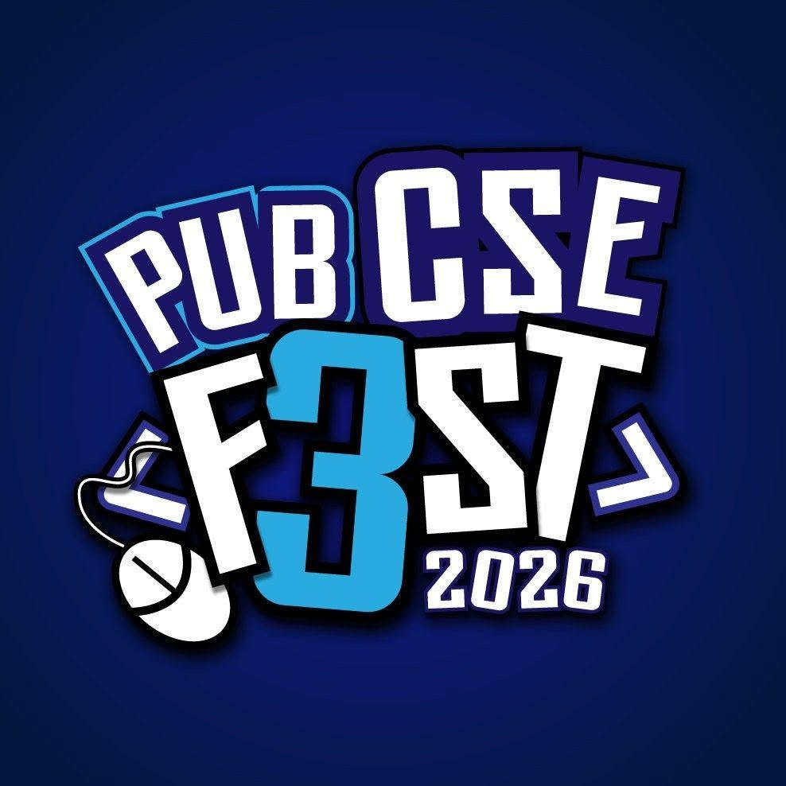

Pundra University of Science & Technology
Department of Computer Science & Engineering

PUB CSE FEST-26
HACKATHON
Problem Set
Build. Break. Innovate.
Problem Index
Track A: Blockchain & Cybersecurity
- A1PUB CertChain: Academic Certificate Verification
- A2PUB Helping Hand: Transparent Fundraising & Student Assistance
- A3PUB PhishGuard: Phishing Detection & Awareness
- A4PUB MediVault: Secure Health Record & Consent Management
Track B: Artificial Intelligence & Machine Learning
- B1PUB NoticeLens: Bengali/English Notice & Document Intelligence
- B2PUB AssessAI: Question Preparation, Assessment & Learning
- B3PUB SkillSync: Skill Matching, Productivity & Early Warning
- B4PUB AttendEye: Computer-Vision-Based Smart Attendance
Track C: Smart Campus Services
- C1PUB CampusMate: Campus Companion, Academic Planning & AI Helpdesk
- C2PUB SafeCampus: Emergency Response & Campus Safety
- C3SmartRent BD: Student Housing & Roommate Matching
- C4PUB CampusRide: Transport Scheduling & Operations
- C5PUB FestHub: Event, Competition & Coding Contest Operations
Track D: Academic & EdTech Platforms
- D1PUB ThesisHub: Project & Thesis Supervision
- D2PUB GradPath: Higher-Study Discovery & Applications
- D3PUB RoboRoute: Delivery Robot Programming Game
Track E: Animated Short Film
- E1A Day in the Life of a CSE Student
- E2From Student to Software Engineer
- E3The Code That Changed Our Department
PUB CSE Fest-26 Hackathon · Problem SetTrack C · Smart Campus Services
C1
PUB CampusMate
Smart Campus Companion with Academic Planning, Course Registration & AI Helpdesk
Problem Description
Students find class routines, exam schedules, notices and academic rules spread across notice boards, social media groups and office visits. Course registration and routine preparation are handled by hand, so clashes are found late. Build one platform where students follow their academic life, the department plans the semester and registers students without conflicts, and an AI helpdesk answers academic questions from official documents.
Required Features
Student Companion
- Secure login and a personal dashboard showing class schedule, exam schedule, personal timetable and room locations.
- Notices, event notifications and a faculty directory.
Academic Planning & Registration
- Manage curricula, prerequisites, semester offerings, sections, rooms and teacher availability.
- Course registration with prerequisite, credit-limit, seat-capacity and timetable-clash checks; advisor approval and add/drop requests.
- Assign teachers and calculate normal/extra teaching workload using configurable rules.
- Create and revise routines; detect teacher, room, section and registered-student conflicts before publishing; coordinate make-up classes.
- Publish approved schedules, notify affected users and keep the revision history.
AI Helpdesk
- Chat assistant that answers questions on courses, prerequisites, faculty, labs, notices and the academic calendar, using retrieval over official department documents.
- Every answer shows its source; Bangla and English questions are supported; the assistant says so when the documents do not contain the answer.
Users & Roles
| Student | Views schedules and notices, registers for courses, asks the helpdesk. |
| Teacher | Sets availability, views assigned courses and workload, proposes make-up classes. |
| Academic Advisor | Approves registrations and add/drop requests. |
| Department Coordinator | Manages offerings, routines, notices and helpdesk documents. |
Restrictions & Scope
- Any platform: web, mobile or both. Authentication and role-based access must be enforced on the server.
- Demonstrate one department and one semester with sample student histories.
Optional Features
Campus map, push notifications, automatic timetable generation, conflict-repair suggestions, waitlists, calendar export.
These requirements define the minimum scope; teams are encouraged to add unique, useful features.2
PUB CSE Fest-26 Hackathon · Problem SetTrack B · Artificial Intelligence & Machine Learning
B4
PUB AttendEye
Computer-Vision-Based Smart Attendance System
Problem Description
Calling a roll wastes class time and paper sign-in sheets allow proxy attendance. Build a system that takes attendance from a camera image or live video of the class, recognizes enrolled students, lets the teacher confirm uncertain cases, and keeps reliable attendance records for every course.
Required Features
- Student enrollment with consent, capturing several face samples per student and linking them to student ID, course and section.
- Teacher starts a class session (course, section, time window) and captures attendance from a live camera feed or an uploaded classroom photo.
- Detect and recognize multiple faces in one frame; mark matched students present.
- Confidence threshold: unknown or low-confidence faces are flagged for teacher review instead of being marked automatically.
- Basic liveness / anti-spoofing check against a printed photo or a phone screen.
- Teacher can correct attendance manually; every correction is logged with time and reason.
- Students see their own attendance percentage per course; low-attendance alerts below a configurable limit.
- Course-wise and date-wise reports with CSV or PDF export.
- Report the recognition accuracy (e.g. precision/recall or false-accept/false-reject rate) on a small test set under different lighting and angles.
Users & Roles
| Student | Enrolls face samples with consent; views own attendance. |
| Teacher | Runs sessions, reviews flagged faces, corrects records, exports reports. |
| Administrator | Manages courses, sections, users and the attendance threshold. |
Restrictions
- Use only faces of consenting volunteers (e.g. team members); no public or scraped face datasets of real students.
- Store face embeddings rather than raw photos where possible, and protect stored biometric data.
- Pretrained detection/recognition models are allowed, but the team must explain its full pipeline and threshold choice.
Optional Features
Mask or partial-occlusion handling, QR + face two-factor check-in, CCTV/IP-camera stream, offline mobile mode, attendance analytics dashboard.
These requirements define the minimum scope; teams are encouraged to add unique, useful features.3